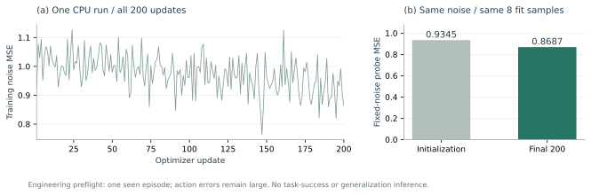

账本的学习价值
M 与强基线 B3 获得同一有限公共历史、教师标签、骨干模型、守卫和预算；只改变账本表示。比较原任务完整成功率。
SYSTEMATIC STUDY · 2026.10.14
在相同历史、数据、模型与预算下，残余事件账本和经过验证的恢复经验，能否让共享机器人策略更准确地完成有时间要求的操作？
M 与强基线 B3 获得同一有限公共历史、教师标签、骨干模型、守卫和预算；只改变账本表示。比较原任务完整成功率。
移除在线教师与跨会话检索后，相对共同祖先和 B3 的提升仍保留。上下文收益与参数收益分别检验。
改变目标、依赖关系、子任务组合与恢复条件。以独立任务图和物理实例统计，训练 seed 描述训练波动。
真实设备控制日志、事件时钟与独立物理或化学终点共同支持。当前增量尚无真机化学记录。
G0 的受力资格关系到承重、卸载等标签。已绑定实际 APPLIED 动作的离线重构可并行检查训练管线，单独计入工程实验。
| 实验家族 / 案例 | 计数单位 | 尝试 / 完成 | 结果与证据 |
|---|
M0/M1/M2 是受力采集家族的三代案例；方法比较 M vs B3 使用独立命名。短诊断的“完成”指截断测量记录完整，不代表完整任务成功。帧、重叠动作块、CPU测试和优化步分别计量。
−1.924 的量级并非近零舍入；带符号细节与对应matrix一致只是数值诊断。官方API示例在有效count/start范围内包含负标量，表明旧“所有法向标量必须非负”的接口前提不成立。文档中的默认dt返回冲量，使用指定dt才转换为力；本例接口标称N，独立单位与方向校准仍开放。
新有符号解析候选0.5通过15项CPU检查及root4项独立探针，保留scalar×normal的方向、有限值与范围；尚未接入native。新校准提案依次检验自由落体、已知重力支撑、旋转与创建顺序，另有可选质量变化，固定49点窗口；尚未执行。承重、机器人卸载和完整力覆盖还需要新的物理校准，M1/M2原分数及拒绝结果保持封存。

G1 v02通过63项CPU检查与3组独立反例，保留旧版语义失败。只读观测可以记录真实不安全状态；原目标动作、局部恢复、安全停止分别授权。及时物理效果的迟到审计可以解析UNKNOWN，原任务已确认的FALSE不会被清理或reset擦除。UNKNOWN状态下安全停止本身也不会产生恢复成功标签。
接入API · 独立源码审查 · 未关闭的接入门禁。当前8192事件/64维目标限制需要明确对接逐tick日志和8×9动作块；完整起始HEADER须由独立任务协议绑定。尚无真实学生rollout或S/F/R准入。
共享训练样本和同状态离线检查核对逐字节相同的有限公共前缀；闭环从配对初始条件出发，匹配信息接口、历史容量、交付与延迟协议，允许后续轨迹和观测分歧。账本不得使用额外历史或私有信息。
每组共同祖先 5,000 步、适应 10,000 步。8 次验证仅检查采集器和任务资格；每组 2 GPUh 到期仍未达统一步数，记为 INCOMPLETE。
12 个评测 cell 中半数为不可恢复负例，合并成功率上界 50%。保留全部尝试分母，另报可恢复层、不可恢复层与可避免的不安全操作。
S512 为共同祖先数据；M/B3 适应时使用 S512＋F256＋R256。F 对应学生实际访问状态上的教师纠错，R 必须有实际执行与独立局部恢复证据。配额不足记 DATA_NOT_READY。
结果加载失败。请刷新页面或直接下载下方冻结数据。